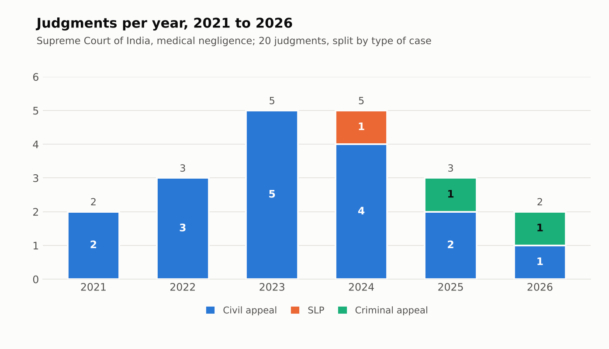
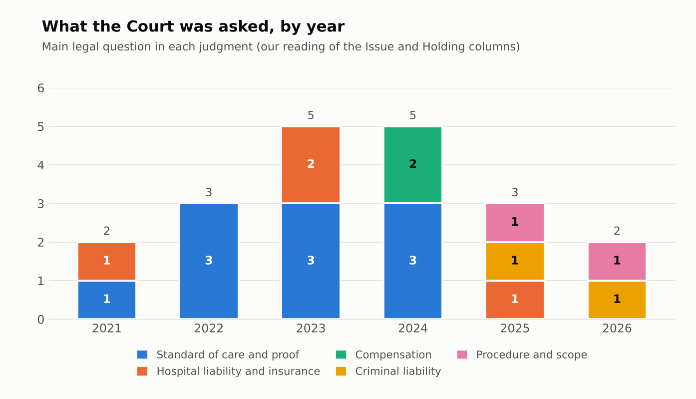
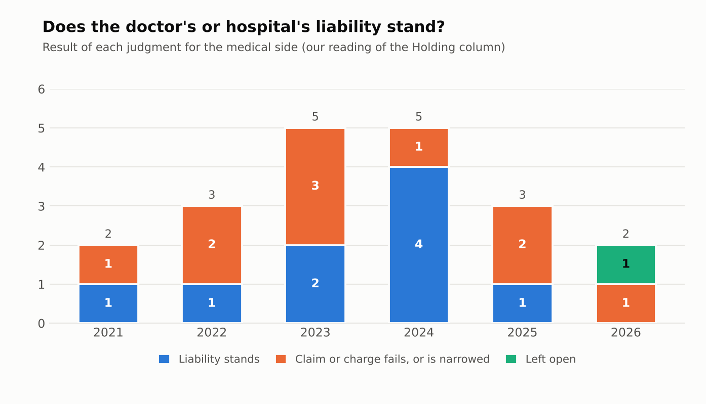
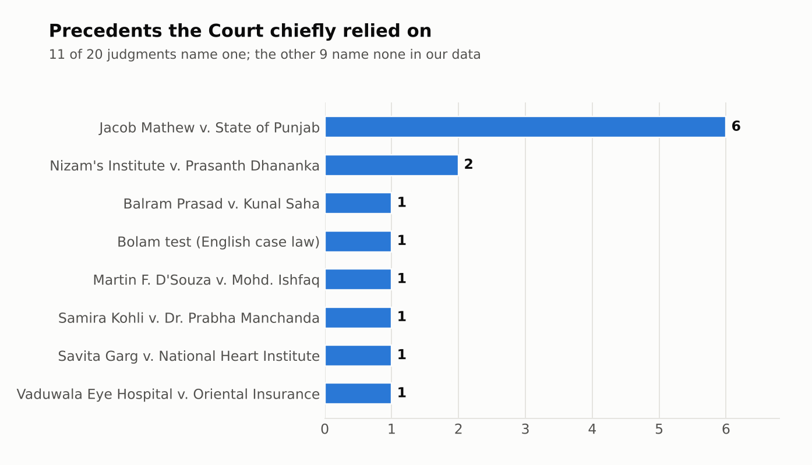
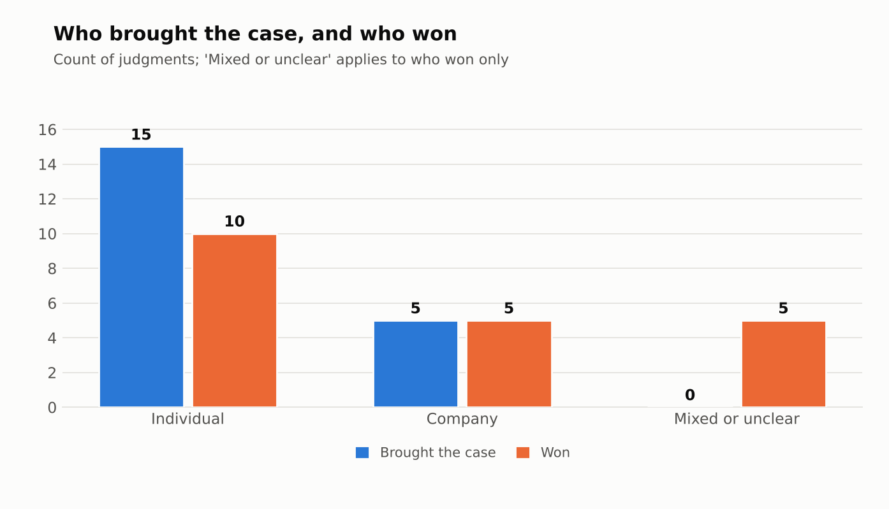

This page analyses 20 Supreme Court of India judgments, decided between 01-09-2021 and 31-08-2026, on whether doctors and hospitals were negligent (consumer and criminal cases). We ask one question: has the Court's approach changed over these years? Every figure comes from our dataset.
What changed, and what did not
- One precedent anchors every year. Jacob Mathew v. State of Punjab is the chief precedent in six judgments, at least one in each year from 2021 to 2026, in civil and criminal cases alike. The core test of negligence did not move.
- The questions changed. Up to 2024, ten of the 15 judgments are about the standard of care and what must be proved. In 2025 and 2026 none is; the five judgments deal with criminal liability, procedure (pleadings, legal heirs) and hospital liability.
- No steady swing in results. Liability stood in nine judgments and failed or was narrowed in ten. Only 2024 leans towards liability standing (four of five).
- Hospitals stay liable. In all four judgments about hospital liability and insurance (2021, 2023 twice, 2025) the hospital or institution remained liable, though one 2025 award was reduced.
- Criminal charges are hard to sustain. Both criminal appeals (2025 and 2026) went the doctor's way: a culpable homicide charge was quashed so the trial proceeds only for death by negligence, and a prosecution was quashed for want of gross negligence.
- Expert evidence is treated unevenly. Judgments in 2021 and 2023 faulted the lack of expert evidence, while one 2024 judgment found negligence established without it. That is one case, not a trend.
The charts
1. Judgments per year

The 20 judgments fall mostly in 2023 and 2024, with five each. Seventeen are civil appeals, one is a special leave petition and two are criminal appeals, both from 2025 and 2026.
2. What the Court was asked, by year

Standard of care and proof accounts for ten of the first 15 judgments and none of the last five. Criminal liability and procedural questions appear only in 2025 and 2026. The sample is small, so this may reflect which judgments we found as much as the Court.
3. Does the doctor's or hospital's liability stand?

There is no consistent drift towards doctors or towards patients. The Court also set aside the NCDRC's order in eight of the 18 civil and consumer judgments and upheld it in seven.
4. Precedents the Court relied on

Jacob Mathew dominates, and the next most-cited case appears only twice.
5. Who brought the case and who won

Because "Individual" mixes patients and doctors, this chart cannot show who fares better. Chart 3 is the better guide to that.
The 20 judgments
All 20 judgments, with our reading of each. This table is the text version of the charts.
| # | Case | Decided | Main legal question | Result for the medical side | NCDRC order | Precedent named |
|---|---|---|---|---|---|---|
| 1 | Bombay Hospital & Medical Research Centre v. Asha Jaiswal and Ors. 2021 INSC 801; 2021 SCC OnLine SC 1149; CA 1658 of 2010 | 30-11-2021 | Standard of care and proof | Claim or charge fails / narrowed | set aside | Jacob Mathew v. State of Punjab |
| 2 | M/s Sheth M.L. Vaduwala Eye Hospital v. Oriental Insurance Co. Ltd. and Ors. CA Nos. 7611-7634 of 2021 | 11-12-2021 | Hospital liability and insurance | Liability stands | – | – |
| 3 | Dr. (Mrs.) Chanda Rani Akhouri v. Dr. M.A. Methusethupathi 2022 SCC OnLine SC 481; CA 6507 of 2009 | 20-04-2022 | Standard of care and proof | Claim or charge fails / narrowed | upheld | Jacob Mathew v. State of Punjab |
| 4 | Harnek Singh and Ors. v. Gurmit Singh and Ors. 2022 INSC 583; CA 4126-4127 of 2022 | 18-05-2022 | Standard of care and proof | Liability stands | set aside | – |
| 5 | Devarakonda Surya Sesha Mani v. Care Hospital, Institute of Medical Sciences CA 4596 of 2022 | 26-08-2022 | Standard of care and proof | Claim or charge fails / narrowed | upheld | Supreme Court decisions on the medical negligence test (not named in the order) |
| 6 | Nagarmal Modi Sewa Sadan v. Prem Prakash Rajagaria and Ors. CA 6224 of 2013 | 20-04-2023 | Hospital liability and insurance | Liability stands | upheld | Sheth M.L. Vaduwala Eye Hospital v. Oriental Insurance Co. (distinguished) |
| 7 | Upendra Kaul v. S.C. Mathur and Ors. CA Nos. 3905-3907 of 2016 | 16-08-2023 | Standard of care and proof | Claim or charge fails / narrowed | set aside | – |
| 8 | CPL Ashish Kumar Chauhan (Retd.) v. Commanding Officer and Ors. 2023 INSC 857; 2023 SCC OnLine SC 1220 | 26-09-2023 | Hospital liability and insurance | Liability stands | set aside | Savita Garg v. Director, National Heart Institute; Nizam's Institute of Medical Sciences v. Prasanth S. Dhananka |
| 9 | Mrs. Kalyani Rajan v. Indraprastha Apollo Hospital and Ors. 2023 INSC 921; 2023 SCC OnLine SC 1355; CA 10347 of 2010 | 17-10-2023 | Standard of care and proof | Claim or charge fails / narrowed | upheld | Martin F. D'Souza v. Mohd. Ishfaq |
| 10 | M.A. Biviji v. Sunita and Ors. 2023 INSC 938; (2024) 2 SCC 242; CA 3975 of 2018 | 19-10-2023 | Standard of care and proof | Claim or charge fails / narrowed | set aside | Jacob Mathew v. State of Punjab |
| 11 | Jyoti Devi v. Suket Hospital and Ors. 2024 INSC 330; SLP(C) 242 of 2016 | 23-04-2024 | Compensation | Liability stands | – | Nizam's Institute of Medical Sciences v. Prasanth S. Dhananka; Balram Prasad v. Kunal Saha |
| 12 | P.N. Gupta v. Rajinder Singh Dogra 2024 INSC 705 | 05-09-2024 | Standard of care and proof | Liability stands | upheld | Jacob Mathew v. State of Punjab; Samira Kohli v. Dr. Prabha Manchanda |
| 13 | D.C. Malviya (Since Deceased) through LRs v. Dr. A.H. Memon (Since Deceased) through LRs and Ors. 2024 INSC 786; SLP(C) 32406-32407 of 2017 | 15-10-2024 | Compensation | Liability stands | upheld | – |
| 14 | Neeraj Sud and Anr. v. Jaswinder Singh (Minor) and Anr. 2024 INSC 825; 2024 SCC OnLine SC 3069 | 25-10-2024 | Standard of care and proof | Claim or charge fails / narrowed | set aside | Bolam test |
| 15 | Bherulal Bhimaji Oswal (Dead) through LRs v. Madhusudan N. Kumbhare 2024 INSC 1035; CA Nos. 14816-14817 of 2024 | 19-12-2024 | Standard of care and proof | Liability stands | set aside | – |
| 16 | Dr. Mohan v. State of Tamil Nadu Crl. A. Nos. 720-722 of 2025 | 12-02-2025 | Criminal liability | Claim or charge fails / narrowed | – | Jacob Mathew v. State of Punjab |
| 17 | Managing Director, Kamineni Hospitals v. Peddi Narayana Swami and Anr. 2025 INSC 527; SLP(C) 2948-2949 of 2023 | 22-04-2025 | Hospital liability and insurance | Liability stands | upheld | – |
| 18 | Deep Nursing Home and Anr. v. Manmeet Singh Mattewal and Ors. 2025 INSC 1094; 2025 SCC OnLine SC 1934 | 09-09-2025 | Procedure and scope | Claim or charge fails / narrowed | set aside | – |
| 19 | Kumud Lall v. Suresh Chandra Roy (Dead) through LRs and Ors. 2026 INSC 443; SLP(C) 33646-33647 of 2018 | 04-05-2026 | Procedure and scope | Left open | – | – |
| 20 | Supriya Kumari M.C. v. State of Kerala and Ors. 2026 INSC 537; 2026 SCC OnLine SC 928 | 25-05-2026 | Criminal liability | Claim or charge fails / narrowed | – | Jacob Mathew v. State of Punjab |
How we built this
We searched the open web (Supreme Court of India PDFs and sites such as LiveLaw, Verdictum, SCC Online Blog and Indian Kanoon) for Supreme Court judgments on the negligence of doctors and hospitals decided between 01-09-2021 and 31-08-2026. Each search returned roughly 10 to 20 links, with many repeats. We kept 20 judgments for which we could find a citation or case number and a report of the holding. Our grouping of each judgment by legal question and result is our own reading of the one-line summaries.
Limits
Twenty judgments found by web search are not a complete list. Do not conclude from them how often the Court rules for doctors or patients, or that the Court's doctrine changed. Counts of two to five judgments a year can move by chance.
AI-use disclosure
We used Claude, an AI assistant made by Anthropic, to convert citations to Supreme Court citations, add two judgments (P.N. Gupta and D.C. Malviya), check dates, benches and case numbers, group the judgments, draw the charts and build this page. Its facts were cross-checked against law-report and news sites. We have not yet compared every entry with the official Supreme Court copy, so entries without a sci.gov.in link are the least verified.